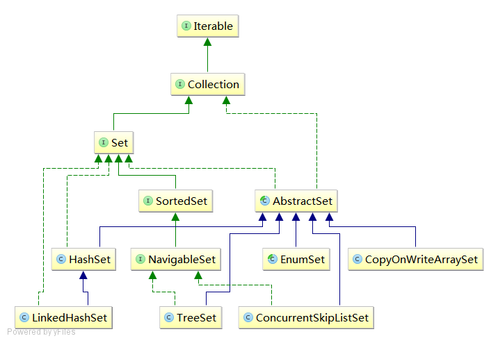

Set
Set是不能包含重复元素的集合。更准确的说，是不能包含满足 "e1.equals(e2)" 的元素对 e1 和 e2 ，并且最多包含一个 null 元素。
Set的UML图： 
接口
SortedSet
SortedSet继承自Set接口
NavigableSet
NavigableSet继承自SortedSet接口
实现类
HashSet
HashSet通过对HashMap的特殊使用来实现的Set接口。
HashSet源码：
//内部其实是个HashMap
private transient HashMap<E,Object> map;
private static final Object PRESENT = new Object();
public HashSet() {
map = new HashMap<>();
}
// 每次插入的Key为e,value为new Object()的键值对。
public boolean add(E e) {
return map.put(e, PRESENT)==null;
}
LinkedHashSet
LinkedHashSet通过LinkedHashMap实现的Set接口，继承自HashSet类。
它的特点是：具有可预知的迭代顺序（按元素插入的顺序），这也是为什么它通过LinkedHashMap实现的原因。
LinkedHashSet源码：
// LinkedHashSet 其实是调用了一个HashSet的特殊构造函数
public LinkedHashSet(int initialCapacity, float loadFactor) {
super(initialCapacity, loadFactor, true);
}
// 这就是HashSet专门为LinkedHashSet设置的构造函数
HashSet(int initialCapacity, float loadFactor, boolean dummy) {
map = new LinkedHashMap<>(initialCapacity, loadFactor);
}
EnumSet
EnumSet与Enum类型一起使用的专用Set接口实现， 它是个抽象类 ，但提供了很多静态方法供开发人员使用 。
/**
* EnumSet源码
*/
// 要得到一个EnumSet实例都直接或间接调用了该方法
public static <E extends Enum<E>> EnumSet<E> noneOf(Class<E> elementType) {
Enum<?>[] universe = getUniverse(elementType);
if (universe == null)
throw new ClassCastException(elementType + " not an enum");
// 可以看到我们得到实际是EnumSet的子类，而且这俩子类我们不能直接new
if (universe.length <= 64)
return new RegularEnumSet<>(elementType, universe);
else
return new JumboEnumSet<>(elementType, universe);
}
/**
* 示例
*/
public class EnumSetTest {
public static void main(String[] args) {
// 调用静态方法得到EnumSet对象
EnumSet<Test> test = EnumSet.allOf(Test.class);
for (Test test2 : test) {
System.out.println(test2.toString());
}
}
}
enum Test{
V1,V2,V3
}
CopyOnWriteArraySet
CopyOnWriteArraySet内部使用CopyOnWriteArrayList来实现的Set接口，因此它拥有CopyOnWriteArrayList的很多特性。
CopyOnWriteArraySet源码：
// 可以看到内部使用了CopyOnWriteArrayList
private final CopyOnWriteArrayList<E> al;
public CopyOnWriteArraySet() {
al = new CopyOnWriteArrayList<E>();
}
// 它实现 “去重” 的操作也是通过CopyOnWriteArrayList的方法实现的
public boolean add(E e) {
return al.addIfAbsent(e);
}
TreeSet
TreeSet基于TreeMap的NavigableSet实现。
TreeSet源码：
private transient NavigableMap<E,Object> m;
private static final Object PRESENT = new Object();
TreeSet(NavigableMap<E,Object> m) {
this.m = m;
}
// 可以看到是基于TreeMap实现的
public TreeSet() {
this(new TreeMap<E,Object>());
}
// 能接收Comparator接口，说明可以自定义排序规则，默认必然是自然顺序
public TreeSet(Comparator<? super E> comparator) {
this(new TreeMap<>(comparator));
}
// “去重” 就靠Map的特性了
public boolean add(E e) {
return m.put(e, PRESENT)==null;
}
ConcurrentSkipListSet
ConcurrentSkipListSet基于ConcurrentSkipListMap实现的NaviableSet接口。
ConcurrentSkipListSet源码：
private final ConcurrentNavigableMap<E,Object> m;
// 可以看到是基于ConcurrentSkipListMap实现的
public ConcurrentSkipListSet() {
m = new ConcurrentSkipListMap<E,Object>();
}
public ConcurrentSkipListSet(Comparator<? super E> comparator) {
m = new ConcurrentSkipListMap<E,Object>(comparator);
}
// “去重”就靠ConcurrentMap的方法
public boolean add(E e) {
return m.putIfAbsent(e, Boolean.TRUE) == null;
}
日期：2014-05-29、2014-05-30
参考资料：